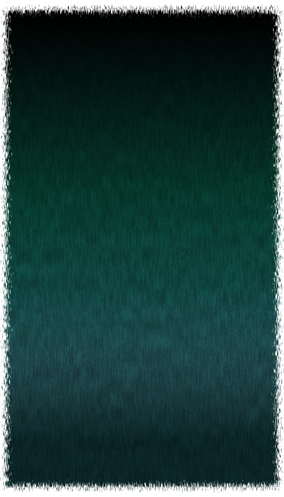
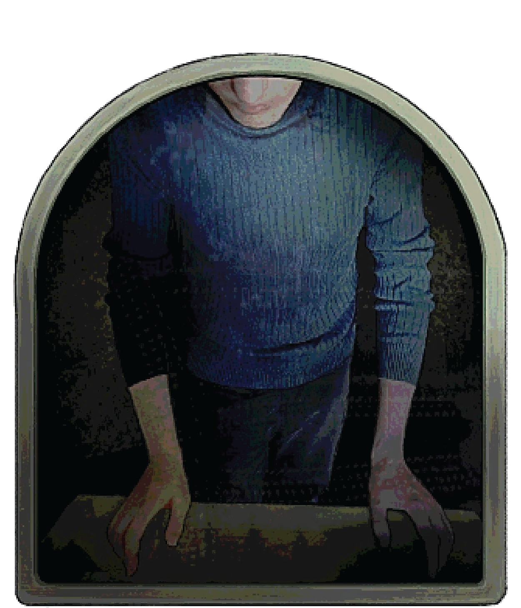
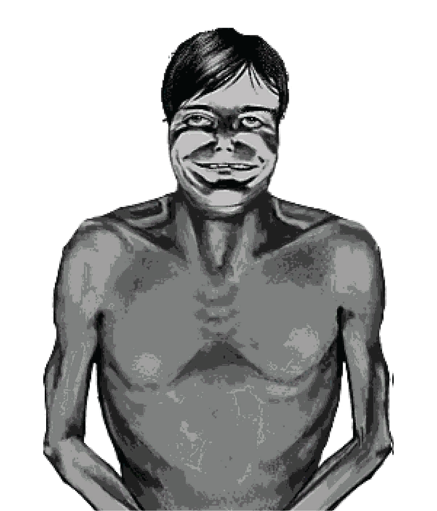
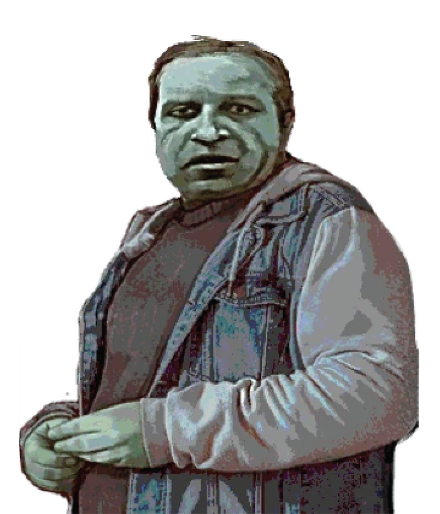
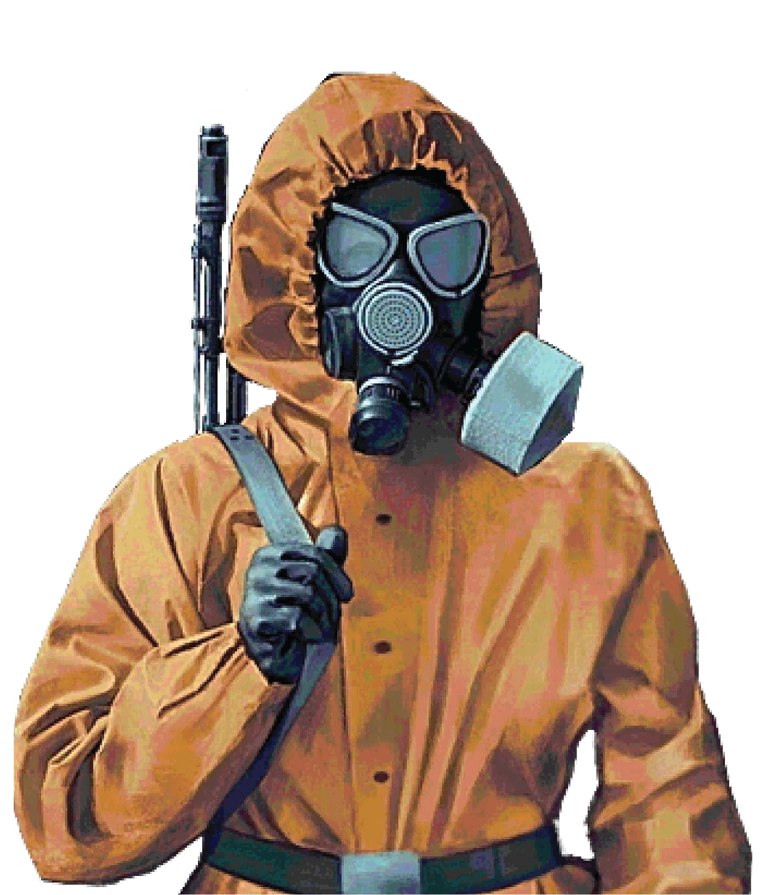
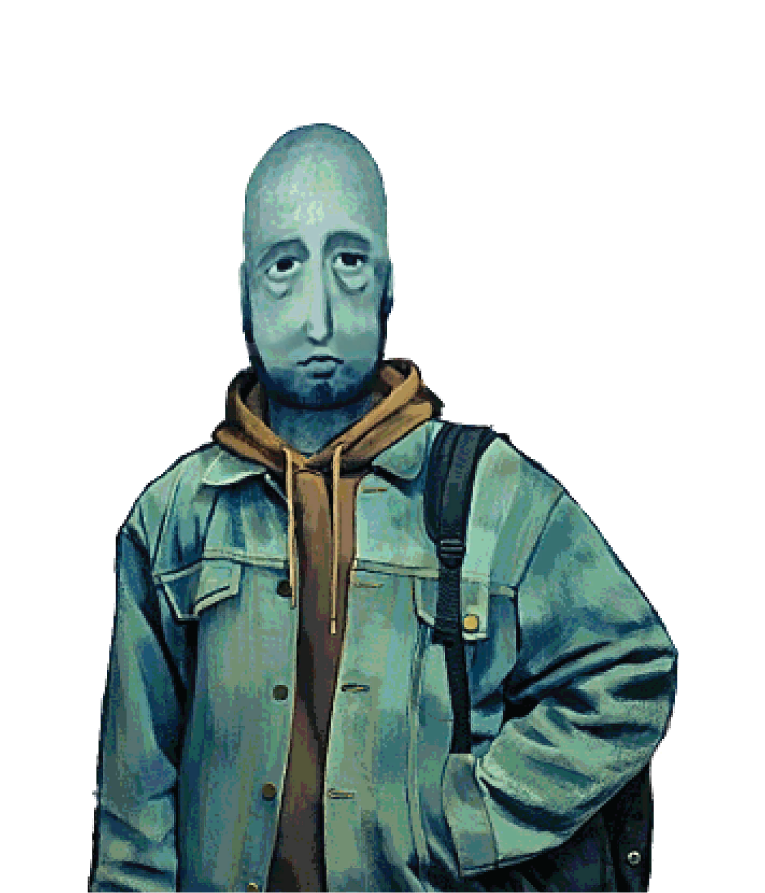
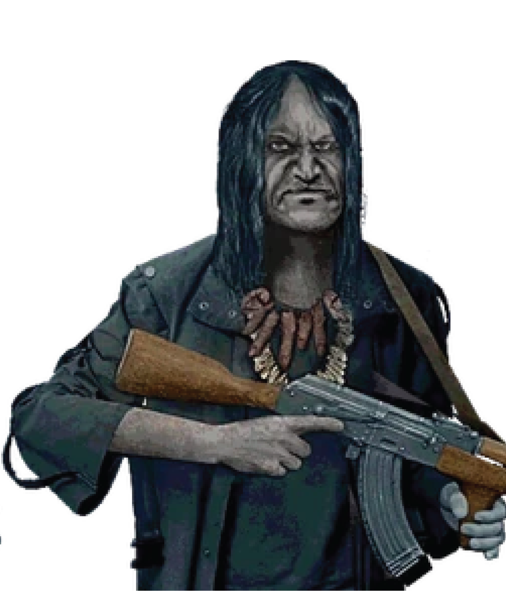

GAME
INTRODUCTION
No, I’m Not A Human, is a psychological horror survival game, with full focus on story, and reading in between the lines. It is a decision-based-outcome game, that forces you to develop a strategy as you try to survive each night.
The visitors are humanoid creatures that came from the ground. At night, they will ask for shelter, so will humans, and you can choose to turn them away. However, it is not safe to stay alone.
VISITOR
IDENTIFICATION
CORE GAME FEATURE
You have to let people into your house, and you must identify if they are a visitor or not. If you invite more than a visitor in, they become dangerous to the actual people in your house. Once identified, the visitor must die or be sent off to FEMA. However, if you misidentify too many humans, you will also risk the trust of the humans in the house.
There is a total of 10 physical signs, but they are not always reliable. One sign is not enough to deem someone a visitor. So the more signs there are, the more likely someone is a visitor. However, in most cases further investigation and discernment is needed.
In gameplay, these signs are given to you by the TV Broadcast.
PHYSICAL SIGNS
- DAY 1: Perfect white teeth
- DAY 2: Dirty nails
- DAY 3: Bloodshot eyes
- DAY 4: Hairless Armpits
- DAY 5: Black Patches in Aura
- DAY 6: Insects Inside Ears
- DAY 7: Bleeding Gums
- DAY 8: Skin Irritation
- DAY 9: Rapid Pupil Movement
- DAY 10: Fungal Growth In Armpits
OTHER SIGNS
Some visitors can be identified by their BEHAVIOR and DIALOGUE. Usually they reveal their visitor status via backstory, and obvious inhuman interests and demeanor.
NOTE: visitors are randomized, so you may encounter the same character as a human. There is only a select few characters that are always human, or visitors.

THE
GAME CYCLE
CORE GAMEPLAY
In the mornings, you are given three energy bars and tasked with plucking out the visitors. You do this by talking to the people in the house. Here you can test people, and what you can test updates each day. However, this does cost energy, meaning you can only test 3 times a day. Normal conversation doesn’t require energy, and it’s possible through dialogue to discern if someones a visitor. When you’re out of energy go to bed. If you still have energy, but are positive no one is a visitor, drink the beer in the fridge to deplete your energy.
At night is when you meet new people, and get further knowledge in how the story progresses. There are 4 nights that break that monotonous streak, these are special events. On Night 3, you are introduced to the Tall Pale Man, essentially known as the ‘villain’ of the game. Then he reappears for Nights 5, 9, and 11.
KEY TIPS
NEVER BE ALONE
NEVER HAVE 2 OR MORE
VISITORS IN THE HOUSE
NEVER CONTRADICT YOURSELF
DON'T KILL BASED ON ONE CLUE
GAME
OVERVIEW
EXPECTATIONS
There is a total of 71 characters, it is unknown if more visitors will be added to the game, however it is possible this will change. In the beginning, the game had roughly 10-15 core characters. Later on more characters were added to the game on January 13, 2026.
Among the countless interactions, there is 13 endings. These all depend on different variables,. Not every interaction will change an ending, but there are some mechanics and events that will change your story direction.
CHARACTERS
TO KNOW

HOMEOWNER
This is the main character you control in the game.

TALL PALE MAN
The most dangerous visitor we come across. Technically, the main villain

THE NEIGHBOR
The first character you meet, and he acts as the tutorial.

FEMA WORKER
A special event character, they will take people from the house to test.

PROPHETIC MAN
When he appears he delivers warnings and advice.

VIGILANTE
A special event character, if you fail his test he will kill you.